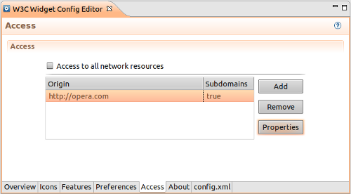

The access tab lets the author define a security policy for accessing network resources.
To add an access definition:
By checking "Access to all network resources", the widget will gain access to all pages (its equivalent to <access origin="*"/>).

More information about access request policy can be found at the W3C - Widget Access Request Policy page.